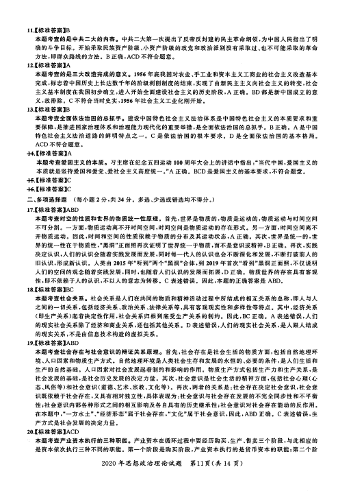
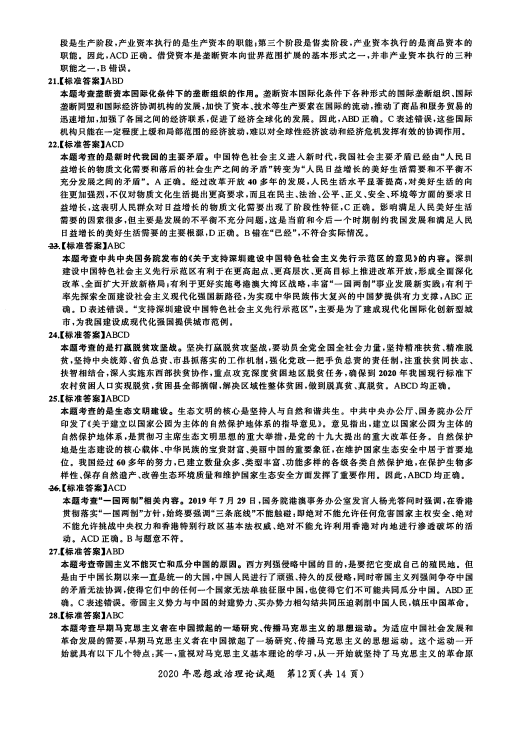
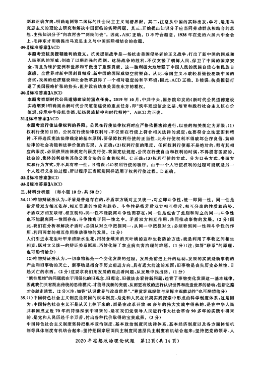
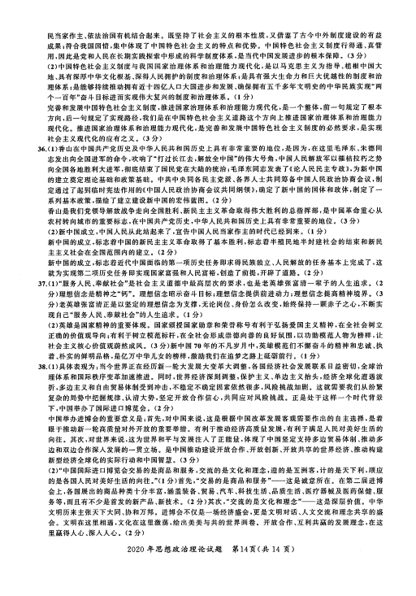

第 1 / 5 页

2020年思想政治理论试题答案及解析
一、单项选择题 （每小题 1分，共 16 分）
-【标准答案】C
本题考查恩格斯的相关著作。《反杜林论》总结了马克思主义诞生后无产阶级革命的经验和自然科学发展的成
就，第一次全面系统地阐述了马克思主义理论体系，故 C 正确。《共产党宣言》是马克思主义诞生的标志，是马克
思和恩格斯为共产主义者同盟起草的纲领。《家庭、私有制和国家的起源》是恩格斯的一部关于古代社会发展规
律和国家起源的著作。《自然辩证法》是恩格斯多年来对自然科学研究的总结。ABD不符合题意。
2.【标准答案】D
本题考查价值评价。价值评价是主体对客体的价值以及价值大小所作的评判或判断。题干中"人们"（即主体）
对人工智能（即客体）的社会效用（即价值）的评价属于价值评价，也即主体对客观事物的属性及其满足主体需
要的价值性评价。D正确，AB概括不准确，很容易排除。C争议比较大，但就单选题而言，D 比 C更切合题意。
3.【标准答案】D
本题考查复杂劳动和简单劳动的转化。简单劳动是指不需要经过专门训练和培养就能从事的劳动。复杂劳
动则是需要经过专门训练和培养才能从事的劳动。在以私有制为基础的商品经济下，复杂劳动转化为简单
劳动是在商品交换过程中自发实现的。D 正确，ABC 不符合题意。
4.【标准答案】A
本题考查列宁关于"社会主义可能首先在一个或者几个国家内获得胜利"的原因。列宁指出，经济和政治发
展的不平衡是资本主义的绝对规律。他在《无产阶级革命的军事纲领》一文中指出，"资本主义在各个国家是
极不平衡的。而且在商品生产下也只能是这样。由此得出一个必然的结论;社会主义不能在所有国家内同
时获得胜利。它将首先在一个或者几个国家内获得胜利。而其余国家在一段时间内将仍然是资产阶级的或
资产阶级以前的国家。"A 正确，BCD不符合题意。
5，【标准答案】C
本题考查的是社会主义本质理论。摘清楚什么是社会主义、怎样建设社会主义，关键是要在坚持社会主义基
本制度的基础上进一步认清社会主义的本质。邓小平根据马克思主义的基本原理和社会主义的实践经验，
对这个问题进行了不懈的探索，作出了科学的判断。C正确。ABD不符合题意。
6.【标准答案】A
本题考查的是深化供给侧结构性改革的主要任务。要推进增长动能转换，以加快发展先进制造业为重点全
面提升实体经济。A 正确。BCD也是深化供给侧结构性改革的主要任务，但不符合题意。
-【标准答案】B
本题考查的是新时代加强和改进人民政协工作的总体要求。习主席在庆祝中国人民政治协商会议 70周年
大会的讲话中强调，新时代加强和改进人民政协工作，要把坚持和发展中 国特色，社会主 义作为巩，固共同思
想政治基础的主轴，把服务实现"两个一百年"奋斗目标作为工作主线，把加强思想政治引领、广泛凝聚共识
作为中心环节。B 正确。ACD不符合题意。
-8.【标准答案】B
本题考查的是习主席在《告台湾同胞书》40 周年纪念大会上的讲话。习主席在讲话中提出，两岸同胞是一家人，两
岸的事是两岸同胞的家里事，当然也应该由家里人商量着办。和平统一，是平等协商、共议统一。两岸长期存在
的政治分歧问题是影响两岸关系行稳致远的总根子，总不能一代一代传下去。B 正确。ACD不符合题意。
9.【标准答案】D
本题考查的是近代以来中华民族两大历史任务。近代以来中华民族面临的两大历史任务分别是争得民族独
立和人民解放，实现国家富强和人民富裕。前者是要从根本上推翻半殖民地半封建的统治秩序，改变落后的
生产关系和上层建筑，因此，要实现这一历史任务，必须首先进行反帝反封建的资产阶级民主革命。后者是
要改变近代中国经济文化落后的地位和状况，发展生产力，实现中国现代化。D 正确。ABC 不符合题意。
10.【标准答案】A
本题考查的是资产阶级革命派和改良派论战的内容。革命派与改良派的论战主要包括三方面的内容;要不
要以革命手段推翻清王朝（论战焦点）、要不要推翻帝制实行共和、要不要进行社会革命。A 正确，BC 虽然
是论战内容，但不是论战焦点，故排除。D不属于论战的内容，不符合题意。
2020年思想政治理论试题 第10页（共14 页）
查看 / 复制本页文字
2020年思想政治理论试题答案及解析 一、单项选择题 （每小题 1分，共 16 分） -【标准答案】C 本题考查恩格斯的相关著作。《反杜林论》总结了马克思主义诞生后无产阶级革命的经验和自然科学发展的成 就，第一次全面系统地阐述了马克思主义理论体系，故 C 正确。《共产党宣言》是马克思主义诞生的标志，是马克 思和恩格斯为共产主义者同盟起草的纲领。《家庭、私有制和国家的起源》是恩格斯的一部关于古代社会发展规 律和国家起源的著作。《自然辩证法》是恩格斯多年来对自然科学研究的总结。ABD不符合题意。 2.【标准答案】D 本题考查价值评价。价值评价是主体对客体的价值以及价值大小所作的评判或判断。题干中"人们"（即主体） 对人工智能（即客体）的社会效用（即价值）的评价属于价值评价，也即主体对客观事物的属性及其满足主体需 要的价值性评价。D正确，AB概括不准确，很容易排除。C争议比较大，但就单选题而言，D 比 C更切合题意。 3.【标准答案】D 本题考查复杂劳动和简单劳动的转化。简单劳动是指不需要经过专门训练和培养就能从事的劳动。复杂劳 动则是需要经过专门训练和培养才能从事的劳动。在以私有制为基础的商品经济下，复杂劳动转化为简单 劳动是在商品交换过程中自发实现的。D 正确，ABC 不符合题意。 4.【标准答案】A 本题考查列宁关于"社会主义可能首先在一个或者几个国家内获得胜利"的原因。列宁指出，经济和政治发 展的不平衡是资本主义的绝对规律。他在《无产阶级革命的军事纲领》一文中指出，"资本主义在各个国家是 极不平衡的。而且在商品生产下也只能是这样。由此得出一个必然的结论;社会主义不能在所有国家内同 时获得胜利。它将首先在一个或者几个国家内获得胜利。而其余国家在一段时间内将仍然是资产阶级的或 资产阶级以前的国家。"A 正确，BCD不符合题意。 5，【标准答案】C 本题考查的是社会主义本质理论。摘清楚什么是社会主义、怎样建设社会主义，关键是要在坚持社会主义基 本制度的基础上进一步认清社会主义的本质。邓小平根据马克思主义的基本原理和社会主义的实践经验， 对这个问题进行了不懈的探索，作出了科学的判断。C正确。ABD不符合题意。 6.【标准答案】A 本题考查的是深化供给侧结构性改革的主要任务。要推进增长动能转换，以加快发展先进制造业为重点全 面提升实体经济。A 正确。BCD也是深化供给侧结构性改革的主要任务，但不符合题意。 -【标准答案】B 本题考查的是新时代加强和改进人民政协工作的总体要求。习主席在庆祝中国人民政治协商会议 70周年 大会的讲话中强调，新时代加强和改进人民政协工作，要把坚持和发展中 国特色，社会主 义作为巩，固共同思 想政治基础的主轴，把服务实现"两个一百年"奋斗目标作为工作主线，把加强思想政治引领、广泛凝聚共识 作为中心环节。B 正确。ACD不符合题意。 -8.【标准答案】B 本题考查的是习主席在《告台湾同胞书》40 周年纪念大会上的讲话。习主席在讲话中提出，两岸同胞是一家人，两 岸的事是两岸同胞的家里事，当然也应该由家里人商量着办。和平统一，是平等协商、共议统一。两岸长期存在 的政治分歧问题是影响两岸关系行稳致远的总根子，总不能一代一代传下去。B 正确。ACD不符合题意。 9.【标准答案】D 本题考查的是近代以来中华民族两大历史任务。近代以来中华民族面临的两大历史任务分别是争得民族独 立和人民解放，实现国家富强和人民富裕。前者是要从根本上推翻半殖民地半封建的统治秩序，改变落后的 生产关系和上层建筑，因此，要实现这一历史任务，必须首先进行反帝反封建的资产阶级民主革命。后者是 要改变近代中国经济文化落后的地位和状况，发展生产力，实现中国现代化。D 正确。ABC 不符合题意。 10.【标准答案】A 本题考查的是资产阶级革命派和改良派论战的内容。革命派与改良派的论战主要包括三方面的内容;要不 要以革命手段推翻清王朝（论战焦点）、要不要推翻帝制实行共和、要不要进行社会革命。A 正确，BC 虽然 是论战内容，但不是论战焦点，故排除。D不属于论战的内容，不符合题意。 2020年思想政治理论试题 第10页（共14 页）
第 2 / 5 页

11.【标准答案】B
本题考查的是中共二大的内容。中共二大第一次提出了反帝反封建的民主革命纲领，为中国人民指出了明
确的斗争目标。开始采取民族资产阶级、小资产阶级的政党和政治派别没有采取过、也不可能采取的革命
方法，即群众路线的方法。B 正确，ACD不符合题意。
12.【标准答案】A
本题考查的是三大改造完成的意义。1956 年底我国对农业、手工业和资本主义工商业的社会主义改造基本
完成，标志着中国历史上长达数千年的阶级剥削制度的结束，实现了由新民主主义向社会主义的转变，社会
主义基本制度在我国初步确立，进入开始全面建设社会主义的历史阶段，A 正确。BD都是新中国成立的意
义，故排除。C不符合当时史实，1956年社会主义工业化刚开始。
13.【标准答案】B
本题考查全面依法治国的总抓手。建设中国特色社会主义法治体系是中国特色社会主义的本质要求和重
要保障，是推进国家治理体系和治理能力现代化的重要举措，是全面依法治国的总抓手。B 正确。A 是中国
特色社会主义法治道路的鲜明特点之一。C 是依法治国的根本要求。D 是全面依法治国的基本格局。
ACD不符合题意。
44;【标准答案】A
本题考查爱国主义的本质。习主席在纪念五四运动100周年大会上的讲话中指出;"当代中国，爱国主义的
本质就是坚持爱国和爱党、爱社会主义高度统一。"A 正确。BCD是爱国主义的基本要求，不符合题意。
45【标准答案】C
46，【标准答案】C
二、多项选择题 （每小题 2 分，共 34 分。多选、少选或错选均不得分。）
17.【标准答案】ABD
本题考查时空的性质和世界的物质统一性原理。首先，世界是物质的，物质是运动的，物质运动与时间空间
不可分割。一方面，物质运动离不开时间空间，时间空间是物质运动的存在形式。另一方面，时间空间离不
开物质运动。因此，时间和空间的性质依赖于物质的分布及其运动状态，A 正确。其次，世界是统一的，世
界的统一性在于物质性，"黑洞"正面照再次证明了世界统一于物质，而不是意识或精神，B 正确。再次，实践
决定认识，人们的认识会随着实践发展而发展，同时每一代人的认识也会不断深化和发展，不断打破前人的
旧认识，形成新认识。人类由 2015 年"听到"两个"黑洞"合体，到 2019 年首次"看到"黑洞正面照，不仅说明
人们的空间的观念随着实践发展，同时，也随着人们认识的发展而拓展，D 正确。物质世界的存在具有客观
性，即不依赖于人的认识，不以人的意志为转移。C 表述错误。因此，本题的正确答案是 ABD。
18.【标准答案】BC
本题考查社会关系。社会关系是人们在共同的物质和精神活动过程中所结成的相互关系的总称，即人与人
之间的一切关系，包括经济关系、政治关系、法律关系等，具有客观现实性和多样性等特点。其中，经济关系
（即生产关系）起着决定性作用，社会关系归根到底受生产关系的制约。因此，BC 正确。A 表述错误，人们
的现实社会关系除了经济和商业关系，还包括其他关系。D表述错误，人们的现实社会关系，是人跟人结成
的现实关系，不是由信息技术构造的虚拟关系。
19.【标准答案】ABD
本题考查社会存在与社会意识的辩证关系原理。首先，社会存在是社会生活的物质方面，包括自然地理环
境、人口因素和物质生产方式。自然地理环境是人类社会生存和发展的永恒的、必要的条件，是人们生活和
生产的自然基础。人口因素对社会发展起着制约和影响的作用。物质生产方式包括生产力和生产关系，是
社会发展的基础，是社会历史发展的决定力量。其次，社会意识是社会生活的精神方面，包括社会心理（心
态、风俗等）和社会意识（道德、艺术、宗教、文化等）。再次，两者的关系是∶社会存在决定社会意识，社会意
识既依赖于社会存在，又具有相对独立性，具体表现为∶社会意识与社会存在发展的不完全同步性和不平衡
性;社会意识内部各种形式之间的相互影响及各自具有的历史继承性;社会意识对社会存在能动的反作用。
在本题中，"一方水土"、"经济形态"属于社会存在，"文化"属于社会意识，因此，ABD 正确。C 表述错误，生
产方式是社会发展的决定力量。
20.【标准答案】ACD
本题考查产业资本执行的三种职能。产业资本在循环过程中要经历购买、生产、售卖三个阶段，与此相应的
是资本依次执行三种不同的职能。第一个阶段是购买阶段，产业资本执行的是货币资本的职能;第二个阶
2020年思想政治理论试题 第11页（共 14 页）
查看 / 复制本页文字
11.【标准答案】B 本题考查的是中共二大的内容。中共二大第一次提出了反帝反封建的民主革命纲领，为中国人民指出了明 确的斗争目标。开始采取民族资产阶级、小资产阶级的政党和政治派别没有采取过、也不可能采取的革命 方法，即群众路线的方法。B 正确，ACD不符合题意。 12.【标准答案】A 本题考查的是三大改造完成的意义。1956 年底我国对农业、手工业和资本主义工商业的社会主义改造基本 完成，标志着中国历史上长达数千年的阶级剥削制度的结束，实现了由新民主主义向社会主义的转变，社会 主义基本制度在我国初步确立，进入开始全面建设社会主义的历史阶段，A 正确。BD都是新中国成立的意 义，故排除。C不符合当时史实，1956年社会主义工业化刚开始。 13.【标准答案】B 本题考查全面依法治国的总抓手。建设中国特色社会主义法治体系是中国特色社会主义的本质要求和重 要保障，是推进国家治理体系和治理能力现代化的重要举措，是全面依法治国的总抓手。B 正确。A 是中国 特色社会主义法治道路的鲜明特点之一。C 是依法治国的根本要求。D 是全面依法治国的基本格局。 ACD不符合题意。 44;【标准答案】A 本题考查爱国主义的本质。习主席在纪念五四运动100周年大会上的讲话中指出;"当代中国，爱国主义的 本质就是坚持爱国和爱党、爱社会主义高度统一。"A 正确。BCD是爱国主义的基本要求，不符合题意。 45【标准答案】C 46，【标准答案】C 二、多项选择题 （每小题 2 分，共 34 分。多选、少选或错选均不得分。） 17.【标准答案】ABD 本题考查时空的性质和世界的物质统一性原理。首先，世界是物质的，物质是运动的，物质运动与时间空间 不可分割。一方面，物质运动离不开时间空间，时间空间是物质运动的存在形式。另一方面，时间空间离不 开物质运动。因此，时间和空间的性质依赖于物质的分布及其运动状态，A 正确。其次，世界是统一的，世 界的统一性在于物质性，"黑洞"正面照再次证明了世界统一于物质，而不是意识或精神，B 正确。再次，实践 决定认识，人们的认识会随着实践发展而发展，同时每一代人的认识也会不断深化和发展，不断打破前人的 旧认识，形成新认识。人类由 2015 年"听到"两个"黑洞"合体，到 2019 年首次"看到"黑洞正面照，不仅说明 人们的空间的观念随着实践发展，同时，也随着人们认识的发展而拓展，D 正确。物质世界的存在具有客观 性，即不依赖于人的认识，不以人的意志为转移。C 表述错误。因此，本题的正确答案是 ABD。 18.【标准答案】BC 本题考查社会关系。社会关系是人们在共同的物质和精神活动过程中所结成的相互关系的总称，即人与人 之间的一切关系，包括经济关系、政治关系、法律关系等，具有客观现实性和多样性等特点。其中，经济关系 （即生产关系）起着决定性作用，社会关系归根到底受生产关系的制约。因此，BC 正确。A 表述错误，人们 的现实社会关系除了经济和商业关系，还包括其他关系。D表述错误，人们的现实社会关系，是人跟人结成 的现实关系，不是由信息技术构造的虚拟关系。 19.【标准答案】ABD 本题考查社会存在与社会意识的辩证关系原理。首先，社会存在是社会生活的物质方面，包括自然地理环 境、人口因素和物质生产方式。自然地理环境是人类社会生存和发展的永恒的、必要的条件，是人们生活和 生产的自然基础。人口因素对社会发展起着制约和影响的作用。物质生产方式包括生产力和生产关系，是 社会发展的基础，是社会历史发展的决定力量。其次，社会意识是社会生活的精神方面，包括社会心理（心 态、风俗等）和社会意识（道德、艺术、宗教、文化等）。再次，两者的关系是∶社会存在决定社会意识，社会意 识既依赖于社会存在，又具有相对独立性，具体表现为∶社会意识与社会存在发展的不完全同步性和不平衡 性;社会意识内部各种形式之间的相互影响及各自具有的历史继承性;社会意识对社会存在能动的反作用。 在本题中，"一方水土"、"经济形态"属于社会存在，"文化"属于社会意识，因此，ABD 正确。C 表述错误，生 产方式是社会发展的决定力量。 20.【标准答案】ACD 本题考查产业资本执行的三种职能。产业资本在循环过程中要经历购买、生产、售卖三个阶段，与此相应的 是资本依次执行三种不同的职能。第一个阶段是购买阶段，产业资本执行的是货币资本的职能;第二个阶 2020年思想政治理论试题 第11页（共 14 页）
第 3 / 5 页

段是生产阶段，产业资本执行的是生产资本的职能;第三个阶段是售卖阶段，产业资本执行的是商品资本的
职能。因此，ACD 正确。借贷资本是垄断资本向世界范围扩展的基本形式之一，并非产业资本执行的三种
职能之一，B 错误。
21.【标准答案】ABD
本题考查垄断资本国际化条件下的垄断组织的作用。垄断资本国际化条件下各种形式的国际垄断组织、国际
垄断同盟和国际经济协调机构的发展，加快了资本 、技术等生产要索在国际的流动，推动了商品和服务 贸易的
迅速增加，加强了各国之间的经济联系，促进了经济全球化的发展。因此，ABD 正确。C表述错误，这些国际
机构只能在一定程度上缓和局部范围的经济波动，难以对全球性经济波动和经济危机发挥有效的协调作用。
22.【标准答案】ACD
本题考查的是新时代我国的主要矛盾。中国特色社会主义进入新时代，我国社会主要矛盾已经由"人民日
益增长的物质文化需要和落后的社会生产之间的矛盾"转变为"人民日益增长的美好生活需要和不平衡不
充分发展之间的矛盾"。A 正确。经过改革开放 40 多年的发展，人民生活水平显著提高，对美好生活的向
往更加强烈，不仅对物质文化生活提出更高要求，而且在民主、法治、公平、正义、安全、环境等方面的要求日
益增长，这表明人民群众对日益增长的物质文化需要出现了阶段性特征，C 正确。影响满足人民美好生活
需要的因素很多，但主要是发展的不平衡不充分问题，这是当前和今后一个时期制约我国发展和满足人民
日益增长的美好生活需要的主要根源，D 正确。B 错在"已经"，不符合实际情况。
23.【标准答案】ABC
本题考查中共中央国务院发布的《关于支持深圳建设中国特色社会主义先行示范区的意见》的内容。深圳
建设中国特色社会主义先行示范区有利于在更高起点、更高层次、更高目标上推进改革开放，形成全面深化
改革、全面扩大开放新格局;有利于更好实施粤港澳大湾区战略，丰富"一国两制"事业发展新实践;有利于
率先探索全面建设社会主义现代化强国新路径，为实现中华民族伟大复兴的中国梦提供有力支撑，ABC 正
确。D 表述错误。"支持深圳建设中国特色社会主义先行示范区"，主要是为了建成现代化国际化创新型城
市，为我国建设成现代化强国提供城市范例。
24.【标准答案】ABCD
本题考查的是打高脱贫攻坚战。坚决打赢脱贫攻坚战，要动员全党全国全社会力量，坚持精准扶贫、精准脱
贫，坚持中央统筹、省负总责、市县抓落实的工作机制，强化党政一把手负总责的责任制，注重扶贫同扶志、
扶智相结合，深入实施东西部扶贫协作，重点攻克深度贫困地区脱贫任务，确保到 2020 年我国现行标准下
农村贫困人口实现脱贫，贫困县全部摘帽，解决区域性整体贫困，做到脱真贫、真脱贫。ABCD 均正确。
25.【标准答案】ABCD
本题考查的是生态文明建设。生态文明的核心是坚持人与自然和谐共生。中共中央办公厅、国务院办公厅
印发了《关于建立以国家公园为主体的自然保护地体系的指导意见》。意见指出，建立以国家公园为主体的
自然保护地体系，是贯彻习主席生态文明思想的重大举措，是党的十九大提出的重大改革任务。自然保护
地是生态建设的核心载体、中华民族的宝贵财富、美丽中国的重要象征，在维护国家生态安全中居于首要地
位。我国经过60多年的努力，已建立数量众多、类型丰富、功能多样的各级各类自然保护地，在保护生物多
样性、保存自然遗产、改善生态环境质量和维护国家生态安全方面发挥了重要作用。因此，ABCD 均正确。
26【标准答案】ACD
本题考查"—国两制"相关内容。2019 年7月 29 日，国务院港澳事务办公室发言人杨光答问时强调，在香港
贯彻落实"一国两制"方针，始终要强调"三条底线"不能触碰;即绝对不能允许任何危害国家主权安全、绝对
不能允许挑战中央权力和香港特别行政区基本法权威、绝对不能允许利用香港对内地进行渗透破坏的活
动。ACD正确。B与题意不符。
27.【标准答案】ABD
本题考查帝国主义不能灭亡和瓜分中国的原因。西方列强侵略中国的目的，是要把它变成自己的殖民地。但
是由于中国长期以来一直是统一的大国，中国人民进行了顽强、持久的反侵略，同时帝国主义列强间争夺中国
的矛盾无法协调，使得它们中的任何一个国家无法单独征服中国，也使得它们不可能共同瓜分中国。ABD正
确。C表述错误。帝国主义势力与中国的封建势力、买办势力相勾结共同压迫剥削中国人民，镇压中国革命。
28.【标准答案】ABC
本题考查早期马克思主义者在中国掀起的一场研究、传播马克思主义的思想运动。为适应中国社会发展和
革命发展的需要，早期马克思主义者在中国掀起了一场研究、传播马克思主义的思想运动。这个运动一开
始就具有以下几个特点;其一，重视对马克思主义基本理论的学习，从一开始就坚持了马克思主义的革命原
2020 年思想政治理论试题 第12页（共 14 页）
查看 / 复制本页文字
段是生产阶段，产业资本执行的是生产资本的职能;第三个阶段是售卖阶段，产业资本执行的是商品资本的 职能。因此，ACD 正确。借贷资本是垄断资本向世界范围扩展的基本形式之一，并非产业资本执行的三种 职能之一，B 错误。 21.【标准答案】ABD 本题考查垄断资本国际化条件下的垄断组织的作用。垄断资本国际化条件下各种形式的国际垄断组织、国际 垄断同盟和国际经济协调机构的发展，加快了资本 、技术等生产要索在国际的流动，推动了商品和服务 贸易的 迅速增加，加强了各国之间的经济联系，促进了经济全球化的发展。因此，ABD 正确。C表述错误，这些国际 机构只能在一定程度上缓和局部范围的经济波动，难以对全球性经济波动和经济危机发挥有效的协调作用。 22.【标准答案】ACD 本题考查的是新时代我国的主要矛盾。中国特色社会主义进入新时代，我国社会主要矛盾已经由"人民日 益增长的物质文化需要和落后的社会生产之间的矛盾"转变为"人民日益增长的美好生活需要和不平衡不 充分发展之间的矛盾"。A 正确。经过改革开放 40 多年的发展，人民生活水平显著提高，对美好生活的向 往更加强烈，不仅对物质文化生活提出更高要求，而且在民主、法治、公平、正义、安全、环境等方面的要求日 益增长，这表明人民群众对日益增长的物质文化需要出现了阶段性特征，C 正确。影响满足人民美好生活 需要的因素很多，但主要是发展的不平衡不充分问题，这是当前和今后一个时期制约我国发展和满足人民 日益增长的美好生活需要的主要根源，D 正确。B 错在"已经"，不符合实际情况。 23.【标准答案】ABC 本题考查中共中央国务院发布的《关于支持深圳建设中国特色社会主义先行示范区的意见》的内容。深圳 建设中国特色社会主义先行示范区有利于在更高起点、更高层次、更高目标上推进改革开放，形成全面深化 改革、全面扩大开放新格局;有利于更好实施粤港澳大湾区战略，丰富"一国两制"事业发展新实践;有利于 率先探索全面建设社会主义现代化强国新路径，为实现中华民族伟大复兴的中国梦提供有力支撑，ABC 正 确。D 表述错误。"支持深圳建设中国特色社会主义先行示范区"，主要是为了建成现代化国际化创新型城 市，为我国建设成现代化强国提供城市范例。 24.【标准答案】ABCD 本题考查的是打高脱贫攻坚战。坚决打赢脱贫攻坚战，要动员全党全国全社会力量，坚持精准扶贫、精准脱 贫，坚持中央统筹、省负总责、市县抓落实的工作机制，强化党政一把手负总责的责任制，注重扶贫同扶志、 扶智相结合，深入实施东西部扶贫协作，重点攻克深度贫困地区脱贫任务，确保到 2020 年我国现行标准下 农村贫困人口实现脱贫，贫困县全部摘帽，解决区域性整体贫困，做到脱真贫、真脱贫。ABCD 均正确。 25.【标准答案】ABCD 本题考查的是生态文明建设。生态文明的核心是坚持人与自然和谐共生。中共中央办公厅、国务院办公厅 印发了《关于建立以国家公园为主体的自然保护地体系的指导意见》。意见指出，建立以国家公园为主体的 自然保护地体系，是贯彻习主席生态文明思想的重大举措，是党的十九大提出的重大改革任务。自然保护 地是生态建设的核心载体、中华民族的宝贵财富、美丽中国的重要象征，在维护国家生态安全中居于首要地 位。我国经过60多年的努力，已建立数量众多、类型丰富、功能多样的各级各类自然保护地，在保护生物多 样性、保存自然遗产、改善生态环境质量和维护国家生态安全方面发挥了重要作用。因此，ABCD 均正确。 26【标准答案】ACD 本题考查"—国两制"相关内容。2019 年7月 29 日，国务院港澳事务办公室发言人杨光答问时强调，在香港 贯彻落实"一国两制"方针，始终要强调"三条底线"不能触碰;即绝对不能允许任何危害国家主权安全、绝对 不能允许挑战中央权力和香港特别行政区基本法权威、绝对不能允许利用香港对内地进行渗透破坏的活 动。ACD正确。B与题意不符。 27.【标准答案】ABD 本题考查帝国主义不能灭亡和瓜分中国的原因。西方列强侵略中国的目的，是要把它变成自己的殖民地。但 是由于中国长期以来一直是统一的大国，中国人民进行了顽强、持久的反侵略，同时帝国主义列强间争夺中国 的矛盾无法协调，使得它们中的任何一个国家无法单独征服中国，也使得它们不可能共同瓜分中国。ABD正 确。C表述错误。帝国主义势力与中国的封建势力、买办势力相勾结共同压迫剥削中国人民，镇压中国革命。 28.【标准答案】ABC 本题考查早期马克思主义者在中国掀起的一场研究、传播马克思主义的思想运动。为适应中国社会发展和 革命发展的需要，早期马克思主义者在中国掀起了一场研究、传播马克思主义的思想运动。这个运动一开 始就具有以下几个特点;其一，重视对马克思主义基本理论的学习，从一开始就坚持了马克思主义的革命原 2020 年思想政治理论试题 第12页（共 14 页）
第 4 / 5 页

则和正确方向，明确地同第二国际的社会民主主义划清界限。其二，注意从中国的实际出发，学习、运用马
克思主义的理论去研究和解决中国面临的实际问题。其三，开始提出知识分子应当同劳动群众相结合的思
想，主张知识分子"向农村夫""到民间夫"。因此，ABC 正确。D不符合题意。1938 年在党的六届六中全会
上，毛泽东才明确提出马克思主义与中国实际相结合的命题。
29，【标准答案】ACD
本题考查抗美援朝胜利的意义。抗美援朝战争是一场抗击美国侵略者的正义战争，打出了新中国的国威和
人民军队的军威，创造了以弱胜强的范例。这场战争的胜利，不仅支援了朝鲜人民、保卫了中国的国家安
全，而且为维护亚洲和世界和平做出了重要贡献。这一胜利极大地增强了中国人民的民族自信心和民族自
豪感。全世界对新中国刮目相看，新中国的国际威望空前提高。从此，帝国主义不敢轻易做侵犯新中国的
尝试，我国的经济建设和社会改革赢得了一个相对稳定的和平环境，因此，ACD 正确。B 错误，抗美援朝打
退 了美国侵略扩张的势头，但并没有结束美国在东方的霸权。
30.【标准答案】ABCD
本题考查新时代公民道德建设的重点任务。2019 年 10 月，中共中央、国务院印发的《新时代公民道德建设
实施纲要》明确提出新时代公民道德建设的重点任务，即"筑牢理想信念之基、培育和践行社会主义核心价
值观、传承中华传统美德、弘扬民族精神和时代精神"。ABCD 均正确。
31.【标准答案】ACD
本题考查行使法律权利的界限。公民在行使法律权利时应严格依据法律进行，以法的相关规定为界限∶（1）
权利行使的目的。公民在行使法律权利时，不仅要在行使上符合相关法律的规定，也要符合立法意图和精
神，不得违反宪法法律确定的基本原则，要保障权利行使的正当性，此外行使权利不得破坏公序良俗，妨碍
法律的社会功能和法律价值的实现。A 正确;（2）权利行使的限度。任何权利行使都不是绝对的，都有其相
应的限度，必须依照法律规定的限度行使，我国宪法规定，公民在行使自由和权利的时候，不得损害国家的、
社会的、集体的利益和其他公民合法的自由和权利。C 正确;（3）权利行使的方式。分为口头方式、书面方
式和行为方式，并不具有唯一性。B错误;（4）权利行使的程序。由于一个人行使权利的过程可能就是另一
个人履行义务的过程，所以程序正当原则同样适用于权利行使过程。D 正确。
32.【标准答案】BCD
33.【标准答案】ABCD
三、材料分析题 （每小题 10分，共 50分）
34.（1）唯物辩证法认为，矛盾是普遍存在的，矛盾双方既对立又统一，对立即斗争性，统一即同一性。同一性是
指矛盾双方相互依存、相互贯通的性质和趋势。斗争性是指矛盾双方相互排斥、相互分离的性质和趋势。
矛盾双方相互联结、相互制约，同一性不能脱离斗争性而存在，同一性是包含了差别和对立的同一;斗争性
也不能脱离同一性而存在，斗争性寓于同一性之中。矛盾双方相互作用，共同推动事物的发展。（2 分）因
此，我们在分析和解决矛盾时，必须从对立中把握同一，从同一中把握对立;必须看到同一性和斗争性的作
用，利用两者的相互作用推动事物的发展。（2 分）
人们引进水花生叶甲来清除水生花，用捕食螨来消灭叶螨的这种生物防治方法，就是利用了事物之间相生
相克，既对立又统一的辩证关系原理，巧妙化解了农业病虫害治理的难题。（1分）（注∶如答"联系"的原理，
也可酌情给分）
（2）唯物辩证法认为，一切事物都是一个变化发展的过程。发展是前进上升的运动，发展的实质是新事物的
产生和旧事物的灭亡。新事物是指合乎历史前进方向、具有远大前途的东西;旧事物是丧失历史必然性、日
趋灭亡的东西。（2 分）这要求我们用发展的观点看问题，从发展中找出路。（1分）
"惯性思维"的问题就在于用僵化的旧观念、旧理论、旧做法去看待新问题，违背了事物变化发展这一基本规律。
因此我们只有跳出传统的思维模式，才能寻找新的突破，从而更有效的进行认识世界和改造世界的活动，创新之路
才会越走越宽。（2 分）（注;如答"认识世界与改造世界"、"尊重客观规律与发挥主观能动性"也可酌情给分）
35.（1）中国特色社会主义制度是我国的根本制度，是党和人民在长期实践探索中形成的科学制度体系，这是因
为∶中国特色社会主义不是从天上掉下来的，而是在改革开放 40多年的伟大实践中得来的，是在中华人民
共和国成立近 70年的持续探索中得来的，是在我们党领导人民进行伟大社会革命 90 多年的实践中得来
的，是党和人民历经千辛万苦、付出各种代价取得的宝贵成果。（3 分）
中国特色社会主义制度坚持把根本政治制度、基本政治制度同法律体系、基本经济制度以及各方面体制机
制等具体制度有机结合起来;坚持把国家层面民主制度同基层民主制度有机结合起来;坚持把党的领导、人
2020年思想政治理论试题 第13页（共 14 页）
查看 / 复制本页文字
则和正确方向，明确地同第二国际的社会民主主义划清界限。其二，注意从中国的实际出发，学习、运用马 克思主义的理论去研究和解决中国面临的实际问题。其三，开始提出知识分子应当同劳动群众相结合的思 想，主张知识分子"向农村夫""到民间夫"。因此，ABC 正确。D不符合题意。1938 年在党的六届六中全会 上，毛泽东才明确提出马克思主义与中国实际相结合的命题。 29，【标准答案】ACD 本题考查抗美援朝胜利的意义。抗美援朝战争是一场抗击美国侵略者的正义战争，打出了新中国的国威和 人民军队的军威，创造了以弱胜强的范例。这场战争的胜利，不仅支援了朝鲜人民、保卫了中国的国家安 全，而且为维护亚洲和世界和平做出了重要贡献。这一胜利极大地增强了中国人民的民族自信心和民族自 豪感。全世界对新中国刮目相看，新中国的国际威望空前提高。从此，帝国主义不敢轻易做侵犯新中国的 尝试，我国的经济建设和社会改革赢得了一个相对稳定的和平环境，因此，ACD 正确。B 错误，抗美援朝打 退 了美国侵略扩张的势头，但并没有结束美国在东方的霸权。 30.【标准答案】ABCD 本题考查新时代公民道德建设的重点任务。2019 年 10 月，中共中央、国务院印发的《新时代公民道德建设 实施纲要》明确提出新时代公民道德建设的重点任务，即"筑牢理想信念之基、培育和践行社会主义核心价 值观、传承中华传统美德、弘扬民族精神和时代精神"。ABCD 均正确。 31.【标准答案】ACD 本题考查行使法律权利的界限。公民在行使法律权利时应严格依据法律进行，以法的相关规定为界限∶（1） 权利行使的目的。公民在行使法律权利时，不仅要在行使上符合相关法律的规定，也要符合立法意图和精 神，不得违反宪法法律确定的基本原则，要保障权利行使的正当性，此外行使权利不得破坏公序良俗，妨碍 法律的社会功能和法律价值的实现。A 正确;（2）权利行使的限度。任何权利行使都不是绝对的，都有其相 应的限度，必须依照法律规定的限度行使，我国宪法规定，公民在行使自由和权利的时候，不得损害国家的、 社会的、集体的利益和其他公民合法的自由和权利。C 正确;（3）权利行使的方式。分为口头方式、书面方 式和行为方式，并不具有唯一性。B错误;（4）权利行使的程序。由于一个人行使权利的过程可能就是另一 个人履行义务的过程，所以程序正当原则同样适用于权利行使过程。D 正确。 32.【标准答案】BCD 33.【标准答案】ABCD 三、材料分析题 （每小题 10分，共 50分） 34.（1）唯物辩证法认为，矛盾是普遍存在的，矛盾双方既对立又统一，对立即斗争性，统一即同一性。同一性是 指矛盾双方相互依存、相互贯通的性质和趋势。斗争性是指矛盾双方相互排斥、相互分离的性质和趋势。 矛盾双方相互联结、相互制约，同一性不能脱离斗争性而存在，同一性是包含了差别和对立的同一;斗争性 也不能脱离同一性而存在，斗争性寓于同一性之中。矛盾双方相互作用，共同推动事物的发展。（2 分）因 此，我们在分析和解决矛盾时，必须从对立中把握同一，从同一中把握对立;必须看到同一性和斗争性的作 用，利用两者的相互作用推动事物的发展。（2 分） 人们引进水花生叶甲来清除水生花，用捕食螨来消灭叶螨的这种生物防治方法，就是利用了事物之间相生 相克，既对立又统一的辩证关系原理，巧妙化解了农业病虫害治理的难题。（1分）（注∶如答"联系"的原理， 也可酌情给分） （2）唯物辩证法认为，一切事物都是一个变化发展的过程。发展是前进上升的运动，发展的实质是新事物的 产生和旧事物的灭亡。新事物是指合乎历史前进方向、具有远大前途的东西;旧事物是丧失历史必然性、日 趋灭亡的东西。（2 分）这要求我们用发展的观点看问题，从发展中找出路。（1分） "惯性思维"的问题就在于用僵化的旧观念、旧理论、旧做法去看待新问题，违背了事物变化发展这一基本规律。 因此我们只有跳出传统的思维模式，才能寻找新的突破，从而更有效的进行认识世界和改造世界的活动，创新之路 才会越走越宽。（2 分）（注;如答"认识世界与改造世界"、"尊重客观规律与发挥主观能动性"也可酌情给分） 35.（1）中国特色社会主义制度是我国的根本制度，是党和人民在长期实践探索中形成的科学制度体系，这是因 为∶中国特色社会主义不是从天上掉下来的，而是在改革开放 40多年的伟大实践中得来的，是在中华人民 共和国成立近 70年的持续探索中得来的，是在我们党领导人民进行伟大社会革命 90 多年的实践中得来 的，是党和人民历经千辛万苦、付出各种代价取得的宝贵成果。（3 分） 中国特色社会主义制度坚持把根本政治制度、基本政治制度同法律体系、基本经济制度以及各方面体制机 制等具体制度有机结合起来;坚持把国家层面民主制度同基层民主制度有机结合起来;坚持把党的领导、人 2020年思想政治理论试题 第13页（共 14 页）
第 5 / 5 页

民当家作主、依法治国有机结合起来。既坚持了社会主义的根本性质，又借鉴了古今中外制度建设的有益
成果;符合我国国情，集中体现了中国特色社会主义的特点和优势。中国特色社会主义制度行得通、真管
用，因此是党和人民在长期实践探索中形成的科学制度体系，是当代中国发展进步的根本保障。（3 分）
（2）中国特色社会主义制度与我国国家治理体系和治理能力现代化，是以马克思主义为指导、植根中国大
地、具有深厚中华文化根基、深得人民拥护的制度和治理体系;是具有强大生命力和巨大优越性的制度和治
理体系;是能够持续推动拥有近十四亿人口大国进步和发展、确保拥有五千多年文明史的中华民族实现"两
个一百年"奋斗目标进而实现伟大复兴的制度和治理体系。（1 分）
完善和发展中国特色社会主义制度，推进国家治理体系和治理能力现代化，是一个整体，前一句规定了根本
方向，后一句规定了实现路径，我们是在中国特色社会主义道路这个方向上推进国家治理体系和治理能力
现代化。推进国家治理体系和治理能力现代化，是完善和发展中国特色社会主义制度的必然要求，是实现
社会主义现代化的应有之义。（3分）
36.（1）香山在中国共产党历史及中华人民共和国历史上具有非常重要的地位，是因为，在这里毛泽东、朱德同
志发出向全国进军的命令，吹响了"打过长江去，解放全中国"的伟大号角，中国人民解放军以摧枯拉朽之势
向全国各地胜利大进军，彻底结束了国民党在大陆的统治;毛泽东同志发表了《论人民民主专政》，为新中国
的建立奠定理论基础和政策基础。中共中央同各民主党派、各界人士共同筹备中国人民政治协商会议，制
定通过了起到临时宪法作用的《中国人民政治协商会议共同纲领》，确定了新中国的国体和政体，制定了一
系列基本政策，描绘了建立建设新中国的宏伟蓝图。（2 分）
香山是我们党领导解放战争走向全国胜利、新民主主义革命取得伟大胜利的总指挥部，是中国革命重心从
农村转向城市的重要标志，在中国共产党历史，中华人民共和国历史上具有非常重要的地位。（3 分）
（2）新中国成立，中国人民从此站起来了，宣告中国人民当家作主的时代已经到来。（1分）
新中国的成立，标志着中国的新民主主义革命取得了基本胜利，标志着半殖民地半封建社会的结束和新 民
主主义社会在全国范围内的建立。（2 分）
新中国的成立，标志着近代中国面临的第一项历史任务即求得民族独立、人民解放的任务基本上完成了，这
就为实现第二项历史任务即实现国家富强和人民富裕，创造了前提，开辟了道路。（2 分）
37.（1）"服务人民、奉献社会"是社会主义道德中最高层次的要求，也是老英雄张富清一辈子的人生追求。（2
分）理想信念是精神之"钙"。理想信念昭示奋斗目标;理想信念提供前进动力;理想信念提高精神境界。（3
分）老英雄张富清正是以坚定的理想信念为支撑，无论岗位、身份怎么改变，始终保持一颗赤子之心，不断实
现自己"服务人民、奉献社会"的人生追求。（1分）
（2）英雄是国家精神的重要体现。国家颁授国家勋章和荣誉称号有利于弘扬爱国主义精神，在全社会树立
正确的价值观导向;有利于树立模范标杆，在全社会形成崇德向善的 良好氛围，以功勋模范人物为榜样，让
社会主义核心价值观蔚然成风。（3分）新中国 70年的不凡岁月中，英雄模范们不懈奋斗的精神和忠诚、执
着、朴实的鲜明品格，是亿万中华儿女的榜样，激励我们在追梦之路上砥砺前行。（1分）
38.（1）具体表现为;当今世界正在经历新一轮大发展大变革大调整，各国经济社会发展联系 日益密切，全球治
理体系和国际秩序变革加速推进。同时，世界经济深刻调整，保护主义、单边主义抬头，经济全球化遭遇波
折，多边主义和自由贸易体制受到冲击，不稳定不确定因素依然很多，风险挑战加剧。这就需要我们从纷繁
复杂的局势中把握规律、认清大势，坚定开放合作信心，共同应对风险挑战。正是处于这样—个时代背景
下，中国举办了国际进口博览会。（2分）
中国举办进博会的重要意义是∶首先，对中国来说，这是根据中国改革发展客观需要作出的自 主选择，是着
眼于推动新一轮高质量对外开放的重要举措。有利于推动经济高质量发展，有利于满足人民对美好生活的
向往。其次，对世界来说，这为世界和平与发展注入了正能量，体现了中国坚定支持多边贸易体制、推动多
边和双边合作深入发展的一贯立场。是中国推动建设开放合作、开放创新、开放共享的世界经济、推动构建
新型经济全球化的实际行动和中国智慧。（3 分）
（2）"中国国际进口博览会交易的是商品和服务，交流的是文化和理念，迎的是五洲客，计的是天下利，顺应
的是各国人民对美好生活的向往。"（1分）首先，"交易的是商品和服务"——这是诚意所在。在第二届进博
会上，各国展出的商品种类十分丰富，涵盖装备、贸易、汽车、科技生活、品质生活、医疗器械及医药保健、服
务等，而且有不少是首发的新产品、新技术。（2 分）其次，"交流的是文化和理念"——这是深层价值。中华
文明历来主张天下大同、协和万邦。进博会不仅是一场经济盛会，更是文明对话、人文交流和理念共享的盛
会。文明在这里相遇，文化在这里激荡，绘出美美与共的世界画卷。开放合作、互利共赢的发展理念，在这
里赢得人心、深人人心。（2 分）
2020 年思想政治理论试题 第14页（共 14 页）
查看 / 复制本页文字
民当家作主、依法治国有机结合起来。既坚持了社会主义的根本性质，又借鉴了古今中外制度建设的有益 成果;符合我国国情，集中体现了中国特色社会主义的特点和优势。中国特色社会主义制度行得通、真管 用，因此是党和人民在长期实践探索中形成的科学制度体系，是当代中国发展进步的根本保障。（3 分） （2）中国特色社会主义制度与我国国家治理体系和治理能力现代化，是以马克思主义为指导、植根中国大 地、具有深厚中华文化根基、深得人民拥护的制度和治理体系;是具有强大生命力和巨大优越性的制度和治 理体系;是能够持续推动拥有近十四亿人口大国进步和发展、确保拥有五千多年文明史的中华民族实现"两 个一百年"奋斗目标进而实现伟大复兴的制度和治理体系。（1 分） 完善和发展中国特色社会主义制度，推进国家治理体系和治理能力现代化，是一个整体，前一句规定了根本 方向，后一句规定了实现路径，我们是在中国特色社会主义道路这个方向上推进国家治理体系和治理能力 现代化。推进国家治理体系和治理能力现代化，是完善和发展中国特色社会主义制度的必然要求，是实现 社会主义现代化的应有之义。（3分） 36.（1）香山在中国共产党历史及中华人民共和国历史上具有非常重要的地位，是因为，在这里毛泽东、朱德同 志发出向全国进军的命令，吹响了"打过长江去，解放全中国"的伟大号角，中国人民解放军以摧枯拉朽之势 向全国各地胜利大进军，彻底结束了国民党在大陆的统治;毛泽东同志发表了《论人民民主专政》，为新中国 的建立奠定理论基础和政策基础。中共中央同各民主党派、各界人士共同筹备中国人民政治协商会议，制 定通过了起到临时宪法作用的《中国人民政治协商会议共同纲领》，确定了新中国的国体和政体，制定了一 系列基本政策，描绘了建立建设新中国的宏伟蓝图。（2 分） 香山是我们党领导解放战争走向全国胜利、新民主主义革命取得伟大胜利的总指挥部，是中国革命重心从 农村转向城市的重要标志，在中国共产党历史，中华人民共和国历史上具有非常重要的地位。（3 分） （2）新中国成立，中国人民从此站起来了，宣告中国人民当家作主的时代已经到来。（1分） 新中国的成立，标志着中国的新民主主义革命取得了基本胜利，标志着半殖民地半封建社会的结束和新 民 主主义社会在全国范围内的建立。（2 分） 新中国的成立，标志着近代中国面临的第一项历史任务即求得民族独立、人民解放的任务基本上完成了，这 就为实现第二项历史任务即实现国家富强和人民富裕，创造了前提，开辟了道路。（2 分） 37.（1）"服务人民、奉献社会"是社会主义道德中最高层次的要求，也是老英雄张富清一辈子的人生追求。（2 分）理想信念是精神之"钙"。理想信念昭示奋斗目标;理想信念提供前进动力;理想信念提高精神境界。（3 分）老英雄张富清正是以坚定的理想信念为支撑，无论岗位、身份怎么改变，始终保持一颗赤子之心，不断实 现自己"服务人民、奉献社会"的人生追求。（1分） （2）英雄是国家精神的重要体现。国家颁授国家勋章和荣誉称号有利于弘扬爱国主义精神，在全社会树立 正确的价值观导向;有利于树立模范标杆，在全社会形成崇德向善的 良好氛围，以功勋模范人物为榜样，让 社会主义核心价值观蔚然成风。（3分）新中国 70年的不凡岁月中，英雄模范们不懈奋斗的精神和忠诚、执 着、朴实的鲜明品格，是亿万中华儿女的榜样，激励我们在追梦之路上砥砺前行。（1分） 38.（1）具体表现为;当今世界正在经历新一轮大发展大变革大调整，各国经济社会发展联系 日益密切，全球治 理体系和国际秩序变革加速推进。同时，世界经济深刻调整，保护主义、单边主义抬头，经济全球化遭遇波 折，多边主义和自由贸易体制受到冲击，不稳定不确定因素依然很多，风险挑战加剧。这就需要我们从纷繁 复杂的局势中把握规律、认清大势，坚定开放合作信心，共同应对风险挑战。正是处于这样—个时代背景 下，中国举办了国际进口博览会。（2分） 中国举办进博会的重要意义是∶首先，对中国来说，这是根据中国改革发展客观需要作出的自 主选择，是着 眼于推动新一轮高质量对外开放的重要举措。有利于推动经济高质量发展，有利于满足人民对美好生活的 向往。其次，对世界来说，这为世界和平与发展注入了正能量，体现了中国坚定支持多边贸易体制、推动多 边和双边合作深入发展的一贯立场。是中国推动建设开放合作、开放创新、开放共享的世界经济、推动构建 新型经济全球化的实际行动和中国智慧。（3 分） （2）"中国国际进口博览会交易的是商品和服务，交流的是文化和理念，迎的是五洲客，计的是天下利，顺应 的是各国人民对美好生活的向往。"（1分）首先，"交易的是商品和服务"——这是诚意所在。在第二届进博 会上，各国展出的商品种类十分丰富，涵盖装备、贸易、汽车、科技生活、品质生活、医疗器械及医药保健、服 务等，而且有不少是首发的新产品、新技术。（2 分）其次，"交流的是文化和理念"——这是深层价值。中华 文明历来主张天下大同、协和万邦。进博会不仅是一场经济盛会，更是文明对话、人文交流和理念共享的盛 会。文明在这里相遇，文化在这里激荡，绘出美美与共的世界画卷。开放合作、互利共赢的发展理念，在这 里赢得人心、深人人心。（2 分） 2020 年思想政治理论试题 第14页（共 14 页）